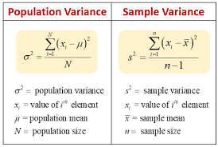
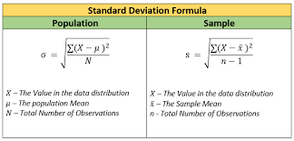

Week 1 | 3-1: Measures of Center
The measures of center are statistical values that represent the typical or central value of a data set.
Part 1: Understanding Measures of Center (20 minutes)
Mean (Average)
Define the mean as the sum of all data values divided by the total number of values.
Explain that the mean is affected by outliers and can be influenced by extreme values.
Show the formula for calculating the mean and provide examples for the students to practice.
Median
Define the median as the middle value in an ordered data set.
Explain that the median is unaffected by outliers and is used to represent the "typical" value.
Demonstrate how to find the median for both odd and even-sized data sets, and provide examples for the students to practice.
Mode
Define the mode as the value(s) that appear most frequently in a data set.
Explain that a data set can have multiple modes (multimodal) or no mode (no repeated values).
Show how to identify the mode(s) and provide examples for the students to practice.
Part 2: Calculating and Interpreting Measures of Center (45 minutes)
Comparing Mean, Median, and Mode
Discuss the similarities and differences among the mean, median, and mode.
Explain when each measure of center is most appropriate to use depending on the characteristics of the data set.
Data Distribution
Introduce the concept of data distribution, including skewed, symmetric, and uniform distributions.
Demonstrate how the measures of center can provide insights into the shape of the data distribution.
Use visual aids (graphs or histograms) to illustrate different distributions and their corresponding measures of center.
Interquartile Range (IQR) and Outliers
Define the interquartile range as the range between the first quartile (Q1) and the third quartile (Q3) in an ordered data set.
Explain how the IQR helps identify potential outliers and describe the process of identifying outliers using the IQR method.
Provide examples and guide the students through the calculation and interpretation of the IQR.
Measures of Center Problem Set
Outliers Problem Set
Week 2 | 3-2: Measures of Variation
This lesson is designed for students who have some background in statistics and data analysis. The
lesson will cover the concepts of range, variance, and standard deviation as measures of variation.
Introduction to Measures of Variation
Start with an engaging activity: Begin the lesson with a real-life scenario that demonstrates the need for
measures of variation.
For example, compare the heights of two groups of students and discuss why just knowing the
average height might not be enough to understand the differences between the groups.
Define Variation: Introduce the concept of variation in data and explain that it measures how spread out the data
points are from the central tendency (mean, median, or mode).
Range: Define the range as the simplest measure of variation, which is the difference between the maximum and
minimum values in a dataset. Discuss how it gives a basic idea of the spread but doesn't consider all data points.
Limitations of Range: Discuss the limitations of the range as a measure of variation, such as being affected by
outliers and not taking into account the distribution of data points.
Advantages of Other Measures: Briefly mention that variance and standard deviation address the limitations of
range and provide a more robust way to measure variation.
Variance: Explain that variance is a measure of how far each data point in the dataset is from the mean, squared
and averaged.
Show the formula for population variance (σ²) and sample variance (s²) and explain the differences.
Standard Deviation: Introduce standard deviation as the square root of variance. Discuss why it is preferred over
variance since it's in the original units of data and easier to interpret.
Calculating Variance and Standard Deviation: Go through step-by-step examples of calculating variance and standard
deviation for both a population and a sample. Emphasize the importance of using the correct formula.
Interpreting Standard Deviation: Explain that a larger standard deviation indicates more spread-out data points,
while a smaller standard deviation indicates data points closer to the mean.
Practice: Provide a set of data and ask students to calculate the variance and standard deviation for both
population and sample. Review the answers as a class.
Real-Life Applications and Further Discussion
Real-Life Examples: Present real-life examples where measures of variation are used, such as analyzing exam
scores, stock market data, or weather patterns.
Comparison with Other Data Sets: Discuss how measures of variation can be used to compare the spread of data
between different data sets.
Outliers and Impact on Variation: Explain how outliers can affect measures of variation and discuss ways to deal
with outliers in data analysis.
Wrap-up Discussion: Summarize the key points of the lesson and discuss why measures of variation are essential in
data analysis and decision-making processes.
Review and Q&A: Encourage students to ask questions and review any challenging concepts covered in the lesson.


Measures of Spread Problem Set
Week 3 | Review for Midterm Exam | Midterm Exam
Week 4 | 3-3: Measures of Relative Standing and Boxplots
Week 5 | 4-1: Basic Concepts of Probability
Week 6 | Review for Final Exam | Final Exam
Center Mean Median Mode Set Sorted Dispersion Range IQR Lower Quartile
Upper Quartile Standard Deviation Variance Probability Independent Event
Dependent Event Coin Toss Die Roll Spinner Combinatorics